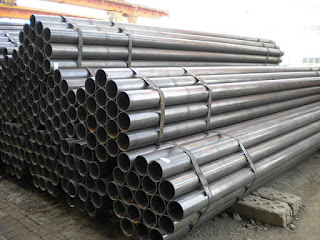

Jual Floor Deck Harga Murah di Pasuruan ☎ 0822 4582 0777 (Rinanti)
Pada kesempatan kali ini, kami berkesempatan untuk membahas beberapa produk tentang atap. Keberadannya pun sudah menggeser kayu dan bahkan sewaktu-waktu dapat menggantinya. Oleh karena itulah kita pastinya membutuhkan atap di setiap pembangunan. Jadi simaklah baik-baik apa saja yang akan saya ulas dalam artikel berikut ini. Ada pula atap galvalum dengan bentuk unik seperti atap lengkung, gelombang dan lain sebagainya. Penasaran seperti apakah fungsi galvalum sebagai atap? Silakan simak artikel berikut ini.
Distributor & Supplier Floor Deck (Bondex)

Floor deck atau bondek merupakan material pengganti material konvensional yang berbentuk seperti papan lebar atau triplek. Produk material ini berfungsi untuk menggantikan fungsi bekisting pada saat melakukan pengecoran plat pada lantai. Sebagai pengganti tulangan positif searah. Sedangkan untuk panjang dan juga lebarnya ada beberapa variasi.
Kini anda bisa mendapatkan floor deck Pasuruan berkualitas dan bermutu tinggi dengan hanya mengunjungi situs dis.or.id. Pastinya dengan harga yang sangat terjangkau dan dengan mutu terbaik.
Info Pemesanan Selengkapnya
Google Maps: https://www.google.com/maps/d/u/0/viewer?mid=1vSGA7eD7ctB-ierGsro9yf6LdDAQHeLS&ll=-6.2537250295094555%2C106.82745&z=15
Note: https://www.facebook.com/notes/distributor-of-industrial-supply/kontraktor-jasa-floor-hardener/1783168878649658/
Event: https://www.facebook.com/events/534395173592364/
Portfolio Produk: https://www.facebook.com/1681607345472479/photos/?tab=album&album_id=1685055588460988
Distributor & Supplier Besi Beton

Besi beton adalah besi yang digunakan untuk penulangan konstruksi beton atau biasa dikenal sebagai fungsi badan bertulang. Besi beton sendiri adalah material yang biasa digunakan dalam konstruksi dengan kekuatan yang sangat besar serta tahan terhadap berbagai guncangan dan tekanan. Besi beton dapat menjadi pondasi pada bangunan yang kuat sehingga membuat bangunan yang aplikasikan besi ini dapat kokoh dan tahan lama. Pengaplikasian besi beton pada suatu bangunan kini telah banyak digunakan karena banyak keunggulan yang diberikan oleh Besi beton.
Besi beton terkenal sebagai bentuk besi yang memiliki kekuatan besar dan tahan terhadap berbagai guncangan dan tekanan.
Salah satu cara untuk mendapatkannya adalah dengan membeli di dis.or.id. Di sana anda akan mendapatkan berbagai macam jenis serta ukuran dari besi beton dengan harga yang cukup terjangkau dan mutu yang sangat terjamin. Jadi, anda tidak perlu ragu lagi.
Distributor & Supplier Steel Grating

Seiring dengan perkembangan zaman, dunia pembangunan bidang kontruksi juga mengalami perubahan amat drastis. Salah satunya dengan menggunakan grating dalam kombinasi pembangunan. Umumnya, Grating digunakan untuk kolam renang. Tetapi, jangan hanya memperhatikan harga karena Anda harus mempertimbangkan kualitasnya terlebih dahulu. Selain untuk keamanan, juga untuk aksesoris kolam renang. Grating ini bisa dirangkai plat strip besi baja dan besi ulir yang dilas pada permukaan silangnya sehingga akan membuat bangunan lebih kokoh dan kuat. Bahan yang berkualitas ini memudahkan para konsumen dalam melakukan pembangunan dengan memperoleh hasil maksimal. Bahan dasar yang digunakan untuk membuat Grating ini cukup berkualitas dan tidak diragukan lagi keamanannya.
Disana anda bisa mendapatkan steel grating dengan berbagai ukuran tertentu dengan harga yang sangat terjangkau namun berkualitas dan bermutu tinggi.
Distributor & Supplier Pipa (Hitam/Gas, Galvanis)

Mungkin anda masih bingung mengenai manfaat pipa hitam ini dalam kehidupan, padahal jika dilihat lagi ada banyak manfaat yang diperoleh dengan mengaplikasikan pipa hitam gas galvanis. Pipa hitam gas galvanis memiliki kekuatan yang tidak dapat diragukan, bagian luar pipa juga telah terlapis stainless steel sehingga menjadikannya tahan korosi. Karena telah diproduksi khusus untuk kebutuhan pertambangan minyak gas, tak heran bila banyak orang yang mengira bahwa nama asli dari pipa ini adalah pipa gas. Sifatnya yang tahan karat menjadikan pipa ini dapat diaplikasikan disegala perubahan cuaca Indonesia. Anda dapat segera menghubungi kami untuk informasi lebih detail mengenai pemesanan pipa hitam.
Distributor & Supplier Kawat Bronjong/Gabion

Kawat bronjong dikenal sebagai anyaman yang terbuat dari kawat di mana tujuannya agar tebing yang tinggi tidak longsor. Ini seperti halnya kawat lainnya. Ini berbentuk seperti anyaman yang terbuat dari kawat biasa. Pasalnya, jika kawat berkarat, maka kawat mudah putus dan rusak. Ini biasanya diterapkan pada tebing tinggi yang sangat rawan sekali terjadi longsor atau erosi karena air hujan. Selain itu, kawat ini juga digunakan pada tiang penyangga bangunan besar atau tiang penyangga jembatan. Tujuannya agar tidak mudah tergerus ketika adanya arus air.
Untuk itu, kini kawat bronjong sangat banyak dibutuhkan pada segal bidang. Disana anda bisa mendapatka kawat dengan harga yang cukup terjangkau dengan kualitas terbaik yang dimilikinya. Sehhingga, anda bisa leluasa memilih kawat bronjong mana yang susuai dengan yang anda butuhkan.
Distributor & Supplier WF H-beam
.jpg)
Besi WF kini menjadi jenis baja struktural yang banyak dikenal masyarakat saat ini. Terlebih saat ini zaman sudah serta praktis dan mudah. Untuk membuat bangunan seperti rumah, pagar, industri, jalan raya, pabrik, dan lain-lain Anda bisa memakai jenis besi ini. Besi WF memiliki daya tahan terhadap suatu bangunan.
Jika membawanya Anda juga tidak perlu khawatir keberatan karena besi ini lebih ringan dan praktis. Pembawaan bebannya pun juga sangat mudah dan terjamin.
Untuk itu bagi anda yang sedang mencari besi baja dengan kualitas terbaik.
Distributor & Supplier Expanded Metal
.jpg)
Expanded Metal adalah sebuah material dari baja yang dibentuk dengan model berlubang hampir mirip dengan anyaman. Umumnya penggunaan dari Expended Metal ini adalah untuk walkway atau catwalk, anak tangga pada tower serta banyak juga digunakan di dermaga/konstruksi lepas pantai/pertambangan. Sedangkan untuk keunggulannya sendiri adalah memiliki bentuk yang indah dan juga homogen, lebih vareatif dalam hal pengaplikasiannya, relatif lebih ringan, dan lebih mudah dipasang. Selain itu, Expended Metal juga dikenal mampu menahan beban berat, memiliki permukaan yang anti slip/tidak licin, dan juga dikenal tahan karat untuk material yang dari alumunium.
Kini anda bisa mendapatkan expanded metal dengan kualitas dan mutu yang telah terjamin di dis.or.id.
Distributor & Supplier Plat (Hitam, Kapal, Bordes, Strip)

Berbicara tentang plat besi memang beragam, hal ini di tentukan dari seberapa besar dan tebal plat yang di inginkan. Mahalnya harga tergantung dari ketebalan besi, motif, dan campuran bahan yang digunakan. Plat besi memang ada yang tipis dan tebal, perihal ukuran ini akan kita sampaikan secara detail pada topik yang berbeda.
Oleh Karena itu dis.or.id dapat menjual plat besi yang murah dengan kualitas yang bagus. Tak perlu khawatir harga, karena harga yang di patok pastinya sangat murah dan terjangkau.
Distributor & Supplier Atap Galvalum

Atap galvalum mempunyai komposisi tertentu sehingga menyebabkan atap galvalum tersebut lebih kuat dan awet jika dibandingkan dengan bahan baja ringan lainnya.
Ada yang menjual per m2 tapi ada pula yang menjual dengan sistem lembaran. Anda pastinya sudah banyak melihat rumah menggunakan atap jenis ini.
Ada anggapan bahwa atap galvalum membuat suasana menjadi panas dan bersik. Galvalum sendiri mempunyai banyak kelebihan diantaranya adalah anti panas. Bila bebannya berat maka anda harus memakai galvalum dengan ukuran yang lebih besar. Bahannya yang terkomposisi dengan baik membuatnya tidak berisik bahkan ketika hujan, tahan lama dan anti karat. Karena galvalum mempunyai daya tahan karat 4x dari galvanis. Tentunya ada sudah mengetahui bahwa galvalum tidak bisa dimakan rayap bukan? Oleh karena itulah bila dibandingkan dengan kayu, maka saya rekomendasikan atap galvalum kepada anda.
Distributor & Supplier Atap Lengkung

Bagian yang berfungsi sebagai pelindung bagi pengguna dan isi bangunan dari panas, hujan dan berbagai macam cuaca adalah atap. Terkadang atap lengkung ini juga sangat berguna bila dipakai dengan hal demikian.
Bentuk dari setiap atap tersebut sangat beragam. Macam bentuknya sendiri antara lain adalah atap lengkung, gelombang, datar, bahkan patah-patah. Atap lengkung mempunyai struktur yang sangat terkomposisi sehingga membuat bentuknya menjadi lengkung dan dapat dijadikan sebagai atap.
Kekuatan dan keunggulannya kiat membuatnya semakin dicari orang. Salah satunya adalah pada stadion bola maupun kolam renang. Atap dengan kualitas baik adalah atap yang kuat menahannya derasnya iklim dan cuaca. Bila anda tertarik untuk mempunyai atap lengkung pada bangunan anda maka janganlah ragu. Maka anda akan mendapatkan penawaran dengan harga terjangkau. Karena kami adalah tangan pertama yang bertindak sebagai supplier, toko sekaligus distributor.
Distributor & Supplier Truss Canal C
Sudah tahukah anda apa yang dimaksud dengan galvalum? Galvalum memang istilah yang kerap kali kita dengar dan umumnya memang sangat erat kaitannya dengan baja. Besi kanal C sebutan untuk besi yang satu ini. Ini dikarenakan besi jenis ini mempunyai kekuatan yang dapat bertahan dalam jangka waktu yang lama. Pilihan ini amatlah tepat mengingat bahwa besi ini sangat melengkapi kekurangan dalam pembangunan rumah minimalis tersebut. Maka janganlah ragu dengan pilihan anda. Segala sesuatu juka diukur sesuai dengan ilmunya maka akan menghasilkan karya yang bangus serta hemat biaya.
Distributor & Supplier Hollow Galvalum
Hollow Galvalum adalah bahan material bangunan yang terbuat dari logam dan bersifat anti karat. Sederhananya, adalah pondasi atap yang tentunya diperlukan tepat dibawah pemasangan atap.
Karena hollow galvalum ini dapat ditemukan di toko bangunan khusus yang keberadaannya juga sudah menjamur. Jika anda berencana membangun sebuah plafon, saran saya pilihlah ukuran yang saya sebutkan diatas. Studi penelitian telah mengungkapkan bahwa kerangkan plafon menggunakan jenis hollow ini bisa bertahan puluhan tahun. Namun sayangnya masih banyak pekerja bangunan yang masih terkendala dari segi pemasangan nya. Tertarik untuk membeli? Hubungi kami sekarang juga, karena kami memiliki penawaran menarik untuk anda.
Distributor & Supplier Seng Gelombang

Atap adalah hal penting yang harus diperhatikan pada setiap bangunan. Kali ini seng gelombang hadir dengan desain warna yang menarik-menarik. Ia lebih mudah di pasang dan harga jual yang ekonomis dipasaran membuat seng gelombang memiliki banyak peminat. Tak heran jika seng gelombang melengkapi fiturnya dengan menyediakan beragam ukuran seng gelombang menurut standar SNI. Walaupun begitu, harga jual seng gelombang warna masih ekonomis dan pas dikantung untuk anda yang ingin menghemat pengeluaran pembangunan.
Dengan beragam ukuran seng gelombang yang tersedia, pasti anda bingung kan manakah diantara ukuran tersebut yang cocok dan pas bila di aplikasikan pada atap bangunan anda? Seng gelombang untuk atap sebenarnya terbilang fleksibel.
Distributor & Supplier Plat Seng

Membeli plat galvanis memang bisa dilakukan dengan cara lembaran atau per meter. Namun tahukah anda berapa ukuran yang banyak dicari orang? Berbicara ukuran, plat galvanis atau seng galvanis memiliki banyak sekali jenis ukuran.
Namun apabila anda berencana membangun sebuah atap dari awal, sebaik nya anda membeli plat galvanis lembaran, karena kebutuhan anda banyak dan juga luas, sehingga yang lembaran ini akan lebih efektif untuk anda.
Disana banyak sekali info yang sangat berguna untuk anda yang sedang mencari plat seng & plat galvalum sesuai kebutuhan anda. Oleh karena itu, peran atap pada sebuah rumah sangatlah penting.
Distributor & Supplier Genteng Metal

Genteng metal adalah salah satu jenis genteng yang berbahan dasar Zincalume, bahan ini merupakan salah satu jenis bahan yang digunakan pada baja ringan. Selain itu genteng metal dinilai lebih anti bocor. Perihal harga, karena kami distributor resmi maka akan kami berikan harga pabrik untuk anda. Produk SNI kami sudah dijamin keasliannya dan tidak KW. Kami dapat menjamin genteng metal yang kami jual adalah produk yang berkualitas. Apakah anda sedang mencari genteng metal berkualitas? Maka anda berada di tempat yang tepat, silakan kunjungi dis.or.id dan dapatkan info menarik khusus untuk anda yang ingin segera mengetahui keunggulan genteng metal ini.
Apakah anda mencari genteng metal? Silakan kunjungi official site dis.or.id dan temukan info menarik untuk anda. Bila belum percaya, maka anda dapat mengujungi situs official kami di dis.or.id untuk mendapatkan info yang lebih lanjut dan dapatkan penawaran terbaik dari kami khusus untuk anda.
Distributor & Supplier Besi Wiremesh

Banyak orang yang menganggap wiremesh ini dengan sebutan besi anyam. Bentuk anyaman dari besi wiremesh sendiri bermacam-macam, ada yang membentuk kotak-kotak ada juga yang jajar genjang, anda dapat memilih sesuai kebutuhan. Manfaat besi wiremesh untuk kebutuhan konstruksi cukup banyak, ia bisa digunakan sebagai penguat dak beton, plat lantai, dan anak tangga. Setiap jenis bentuk wiremesh dimanfaatkan untuk kebutuhan yang berbeda-beda, tergantung dari anda memilih jenis anyam kotak atau jajar genjang. Untuk bangunan bertingkat besi wiremesh yang digunakan adalah ukuran 8 sampai 10. Sedangkan untuk kebutuhan bangunan biasa menggunakan jenis wiremesh ukuran 4 sampai 6 sudah cukup kuat. Besi wiremesh diproduksi dengan sistem las otomatis sehingga hasilnya rapi dan jaraknya teratur. Bagi anda yang membutuhkan besi wiremesh, kini dapat memesan pada kami!
Distributor & Supplier Pagar BRC

Pagar brc di produksi dengan material besi yang memiliki ketebalan berbeda-beda, ada yang 5mm – 8mm. Pemanfaatan pagar BRC sendiri tergolong sebagai pagar minimalis yang siap digunakan untuk melindungi sebuah bangunan. Kekuatannya pun tidak dapat diragukan lagi karena ia dibuat dengan baja yang bertegangan tinggi, U55 grade dan tegangan ijin 2900kg/cm2. Lapisan galvanis yang terdapat pada pagar BRC menjadikannya tahan akan korosi maupun karat, tak heran bila umur pengaplikasian dari pagar BRC bisa mencapai 10 tahun. Jika Anda membutuhkan pagar BRC ini segera kunjungi situs resmi kami untuk informasi lebih detail.
Distributor & Supplier Kawat Loket, Kawat Harmonika

Apakah anda membutuhkan kawat untuk penyekat? Kawat pagar? Penutup jendela? Atau kebutuhan lainnya? Untuk kebutuhan seperti ini anda bisa gunakan kawat loket harmonika yang memiliki bentuk seperti anyaman dan kuat. Pemanfaatan kawat loket harmonika dalam kehidupan sehari-hari sangat banyak, selain untuk industri konstruksi banyak keperluan rumah yang memanfaatkan jenis kawat ini. Apalagi bila anda membeli jenis kawat loket harmonika yang sudah terlapisi dengan galvanis sehingga ia awet dan tahan terhadap korosi. Apalagi bila jenis kawat harmonika yang digunakan adalah galvanis yang terkenal tahan karat maupun korosi sehingga sangat awet. Kawat loket harmonika yang kami tawarkan berkualitas mutu tinggi sehingga cocok untuk berbagai keperluan, segera hubungi kami untuk informasi pemesanan! kami dapat memenuhi kebutuhan kawat loket harmonika anda dengan beragam ukuran, maksimal ukuran yang diterima adalah 3 meter.
Distributor & Supplier CNP & UNP

Besi yang sering diaplikasikan untuk keperluan sambungan dan dudukan atap adalah besi kanal UNP, bentuk besi ini melengkung dan membentuk huruf U. Spesifikasi dari besi UNP sendiri sebenarnya hampir sama dengan besi WF, hanya saja besi UNP lebih mudah melengkung untuk itu sangat jarang pengaplikasiannya pada kolom bangunan. Besi UNP juga sering dikaitkan dengan besi CNP yang juga masuk dalam kategori kelasnya. Jika besi UNP dimanfaatkan untuk keperluan penutup sebuah dinding karena bentuknya melengkung seperti huruf U, beda halnya dengan besi CNP yang sering disebut sebagai balok purlin. Besi CNP sangat fleksibel karena materialnya dapat dimodifikasi dengan menggunakan plat koil. Selain untuk material konstruksi bangunan, besi CNP juga bermanfaat untuk industri otomotif.
Distributor & Supplier Besi Siku

Salah satu material besi baja yang memiliki banyak manfaat untuk kehidupan ini adalah besi siku, jenis material ini bahkan bermanfaat untuk kebutuhan rumahan. Dilihat dari namanya saja, sudah jelas jika besi siku merupakan besi logam yang berbentuk dua garis tegak lurus membentuk 90 derajat. Untuk panjangnya, pada umumnya besi siku dibuat dengan ukuran 6 meter dan ketebalan lebar yang berbeda-beda. Jika anda membutuhkan besi siku ini, segera hubungi kami! Kami menjual besi siku yang kokoh dan tahan lama. Produk besi siku yang kami tawarkan cocok untuk beragam keperluan, baik rumahan, konstruksi, industri dan sebagainya. Hubungi saja kontak yang telah tersedia untuk mengetahui informasi pemesanan lebih detail.
Distributor & Supplier Hollow (Hitam, Galvanil, Galvanis)

Besi hollow banyak sekali dimanfaatkan untuk kebutuhan proyek bangunan karena kualitasnya yang lebih kuat dibanding kayu. Apalagi jika mengingat menggunakan besi hollow akan membuat pengerjaan konstruksi selesai lebih cepat. Tentu saja hal ini karena kelebihan yang ditawarkan oleh besi hollow sendiri tidak dimiliki kayu, material yang kokoh, pengerjaan cepat, dan tidak mudah rapuh. Tentu saja hal ini dikarenakan kekuatan yang dimiliki hollow galvanis tidak bisa dibandingkan dengan kayu, material ini juga lebih mempercepat pembangunan konstruksi. Besi hollow memiliki kekuatan yang lebih kokoh dan dapat mempercepat pekerjaan konstruksi karena strukturnya yang mudah diatur. Manfaat besi hollow dalam kehidupan ini banyak sekali, diantaranya untuk keperluan pagar, teralis, pintu besi, dan berbagai kebutuhan lain. Butuh info lebih lanjut? Anda dapat menghubungi kontak yang telah tersedia. Untuk informasi detail mengenai panjang dan harganya, segera hubungi kami. Anda bebas untuk menentukan ukuran pesanan besi hollow yang dibutuhkan pada kami. Jika anda tertarik memesan besi hollow ini maka tentukan dulu total kebutuhan anda, hubungi kami segera untuk info lebih lanjut!Selain sebagai pengganti material kayu, besi hollow yang kami jual dapat anda manfaatkan untuk kepentingan teralis, pintu besi, pagar, dan lain sebagainya.Bagi anda yang membutuhkan besi hollow, anda dapat menghubungi kami, besi hollow yang kami tawarkan cocok untuk kebutuhan pagar, pintu besi, teralis, dan lain sebagainya.Selain sebagai pengganti material kayu, besi hollow banyak dimanfaatkan untuk kebutuhan pintu besi dan teralis.
Distributor & Supplier Pipa Pancang

Untuk yang di bahas pertama adalah pipa pancang. apalagi mengingat banyak yang mencarinya karena memang memiliki fungsi yang sangatlah bermanfaat. sedangkan untuk ukuran maupun spesifikasi yang di sediakan pun berbeda-beda sehingga Anda bisa dengan mudah menyesuaikannya. Sedangkan dari segi spesifikasi, pipa pancang tersedia dalam berbagai ukuran. Hal ini bertujuan untuk memudahkan penyesuaian. apalagi jika yang di katakan adalah di industri DIS ini. apalagi mengingat banyaknya distributor yang melayani termasuk DIS. Sedangkan untuk kualitas pipa pun akan sangat terjamin dengan mutu terbaik. Bukan hanya kualitas bahannya saja yang bagus tetapi juga untuk pembuatannya. Dengan begini, maka dalam penggunannya, pipa pancang juga bisa di aplikasikan secara maksimal.
Jasa Pondasi Bor (Strouss/Borepile)

Kalau menyebut pondasi bor, tentu saja tidak asing lagi jika dalam setiap pembangunan akan di butuhkan hasil maksimal termasuk dalam hal ini. oleh karena itu, jika Anda ingin menggunakan jasa pengeboran, tidak dapat di pungkiri lagi bahwa hal itu akan sangat membantu sebagai solusi. Sedangkan di mana Anda bisa mendapatkannya, jangan khawatir karena di sini Anda pun bisa memesan jasa tersebut. Di sini jasa pondasi bor melayani pengeboran yang mana hasil dan kualitasnya terjamin. Pelakunya pun merupakan orang-orang terlatih yang sadah profesional dan lebih berpengalaman. Jika mengenal pengeboran lebih jauh, sebenarnya ada dua jenis yakni manual dan otomatis dengan penggunaan mesin. Dalam hal ini jika tidak ingin menggunakan jasa bor, Anda bisa membeli mesinnya.
Distributor & Supplier Genset (New/Second)

Genset atau generator set tentu saja juga sudah sangat familiar karena memang hingga kini banyak yang menggunakannya. Sedangkan dalam pengaplikasian tersebut, tenaga dari genset di hasilkan dari bahan bakar solar. Dalam penjualan nya, genset ini biasanya ada dua pilihan yaki dalam kondisi baru maupun second atau bekas. Nah, untuk pembelian keduanya, bisa Anda dapatkan pula di DIS.
Dengan harga genset yang cukup tinggi, memang akan lebih ringan jika membeli genset yang sudah second. Oleh karena itu tidak sedikit yang memilih membeli genset bekas. Namun, dari segi kualitasnya jangan khawtair karena masih banyak genset bekas yang kondisinya hampir seperti genset baru. Namun yang membelinya dalam kondisi baru pun juga banyak untuk penggunaan lebih maksimal.
Distributor & Supplier UPS

UPS saat ini sebenarnya telah banyak di gunakan. Hanya saja, yang tidak mengetahui nya pu juga cukup banyak. Sebenarnya bisa di akui bahwa memiliki nya sangatlah penting. UPS sendiri secara umum sebenarnya cukup penting untuk di miliki. terlebih bagi pengguna komputer. Sedangkan dari jenisnya, UPS cukup variatif. Karenanya, ketika Anda membeli UPS ini, sebaiknya memastikan terlebih dahulu seberapa besar kapasitas yang Anda butuhkan. Jadi ketika membelinya sebaiknya Anda pastikan sesuai dengan kebutuhan. Sedangkan dalam penjualan, di sini kami menawarkan UPS dengan kualitas terjamin dan harga memadai. Untuk tingkat ketahanan nya pun juga cukup tinggi sehingga bisa lebih menguntungkan.
Distributor & Supplier Forklift (Second)

Oleh karena itu, banyak penjualannya di mana-mana. sedangkan untuk pembeliannya, memang bisa memilih antara yang baru dan bekas. Nah, kalau di DIS sendiri Anda akan banyak menemukan barangnya dengan kualitas bagus sekalipun second. Kalau untuk kualitasnya sendiri, meski bekas tetap saja terjamin. Yang lebih menarik lagi, forklif cukup menguntungkan karena jika sudah tidak di gunakan lagi Anda bisa menjualnya kepada beberapa distributor yang tersedia di berbagai tempat. Sedangkan yang lebih menguntungkan lagi darinya adalah, ketika Anda sudah tidak memerlukannya, maka bisa di jal kembali pada distributor forklif.
Jasa Pembuatan Moulding Inject

Anda sedang bingung akan membuat inject moulding? Terkait akan hal tersebut, jangan khawatir karena saat ini ada banyak penawar jasa, termasuk yang di sarankan DIS, yang siap membantu Anda. Di sini pun Anda bisa mendapatkan jalan keluarnya. Selain itu, masalah kualitas pun juga tidak kalah karena moulding inject yang di hasilkan memiliki kualitas terbaik. Jika ingin mendapatkan moulding inject dengan kualitas terbaik, maka memang di sini lah tempatnya. sedangkan bagi Anda yang sedang bingung untuk mencari ide bentuknya, jangan khawatir karena ada beberapa ide yang bisa Anda gunakan. Tinggal menyesuaikan saja dengan bagaimana kebutuhan untuk produknya sehingga pencetakan yang di lakukan bisa menghasilkan bentuk yang tepat.
Jasa Pembuatan Sparepart Mesin Produksi / Alat Berat

Sparepart tentu saja sudah tidak asing lagi di dunia permesinan. Terlebih jika mengingat lebih jauh bahwa alat ini memiliki fungsi yang cukup penting sehingga membutuhkan perhatian tinggi dalam pembuatannya. Jadi sebisa mungkin Anda harus memilih jasa terpercaya. Apalagi mengingat dukungan tenaga profesional yang di sediakan sehingga sparepart Anda akan lebih aman. Terkait dengan hal itu, perlu Anda ketahui bahwa pembuatan sparepart yang salah, bisa jadi akan membahayakan si pengguna. Mengenai alat berat, dalam pembuatannya memang tidak bisa sembarangan. oleh karena itu, di butuhkan hasil sempurna agar dalam penggunaannya bisa maksimal.
Jasa Service Elektronik (Kompor Gas, Dispenser, Mesin Cuci)

Dengan semakin berkembanganya zaman, penggunaan elektro juga semakin banyak. Oleh karena itu, sebagai penyeimbang, tidak heran pula jika jasa service elektronik yang melayani perbaikan seperti kompor gas, dispenser dan mesin cuci terus bermunculan. Kalau berbicara masalah kualitas, jangan khawatir karena DIS menyediakan service handal yang akan melakukan perbaikan sempurna. Nah, kalau masalah servicenya sendiri sebenarnya Anda bisa juga melakukannya pada barang-barang yang harus di cek saja sekalipun tidak ada keluhan secara spesifik. Nah, apa pun barang yang perlu di perbaiki, kini akan kembali berfungsi seperti semula.
Nah, apakah anda sudah mengerti betapa pentingnya atap untuk keperluan setiap pembangunan? Tentu sangat penting bukan? Atap sangat dibutuhkan dalam setiap pembangunan sehingga membuatnya sering dicari. Hanya bangunan yang tidak terselesaikan dan bangunan yang terbengkalai yang tidak mempunyai atap. Memang, ada beberapa bangunan mewah yang sudah memakai beton sebagai atapnya. Sehingga dapat memunculkan kalimat tiada bangunan tak beratap. Dengan senang hati, kami akan memberikan solusi untuk setiap kebutuhan dan keperluan anda. Kunjungi dis.or.id untuk mendapatkan bantuan, info dan penawaran terbaik khusus untuk anda.